This FAQ is an attempt to answer common questions on InChI-related concepts and the structure and meaning of InChIs. Where possible we quote directly from the official IUPAC/InChI Trust sites and the distribution.
The original 'Unofficial InChI FAQ' was created by Nick Day at the Unilever Centre, Department of Chemistry, Cambridge University. In 2011, the document has been revised and updated, with the permission of Nick Day, by the InChI Trust to take into account recent developments of InChI itself and the InChI software. It has the status of an official FAQ.
The description of InChI in this FAQ corresponds now to the latest software release of Fall 2011 and to the latest official documentation. Most of the examples below use Standard InChI & InChIKey.
InChI is a project of the International Union of Pure and Applied Chemistry (IUPAC) described at: http://www.iupac.org/inchi/
The IUPAC body which takes care of the current and future shape of InChI is the "IUPAC InChI Subcommittee" (IUPAC Division VIII InChI Subcommittee).
Current members of the IUPAC InChI Subcommittee are:
- Chair: S. R. Heller
- Secretary: A. D. McNaught
- Members: S. M. Bachrach, C. Batchelor, E. Bolton, N. Goncharoff, J. M. Goodman, M. Nicklaus, I. Pletnev, H. Rey, S. E. Stein, C. Steinbeck, K. T. Taylor, D. Tchekhovskoi, E. S. Wilks, A. Williams, A. Yerin.
There exist also InChI Subcommittee working groups made up of additional chemists who are developing rules for extending the capabilities of InChI. See: http://iupac.org/web/ins/802
Historically, the primary development of the InChI algorithm and software took place at NIST (US National Institute of Standards and Technology, USA) under the auspices of IUPAC.
Since 2009, the responsibility for InChI technical development and promotion has been in the hands of the InChI Trust - a not-for-profit organization which works in close contact with IUPAC (and of which IUPAC is a member).
The lists of InChI Trust members, associates, and supporters are updated frequently, the current lists can be found at:
http://inchi-trust.org/index.php?q=node/1
and
http://inchi-trust.org/index.php?q=node/16
InChI Trust site:
http://www.inchi-trust.org
IUPAC/InChI Trust Agreement:
http://www.iupac.org/publications/ci/2010/3204/iw2_inchi.html
Please refer to the page http://www.inchi-trust.org/index.php?q=node/4 which contains lists of both Internet resources and scientific articles related to InChI.
Yes. There is the inchi-discuss mailing list at SourceForge where "comments, questions and offers of help are welcomed".
To sign up for the discussion list, visit this page.
To view past discussions, visit the list archive.
As far as we are aware, there are currently no other InChI FAQs available on the web - except for the original "Unofficial InChI FAQ" document by Nick Day which is still available at http://wwmm.ch.cam.ac.uk/inchifaq/ as of the end of 2011.
This FAQ is maintained by the InChI Trust.
InChI is an acronym for IUPAC International Chemical Identifier. It is a string of characters capable of uniquely representing a chemical substance and serving as its unique digital 'signature'. It is derived solely from a structural representation of that substance in a way designed to be independent of the way that the structure was drawn. A single compound will always produce the same identifier.
In one sentence: InChI provides a precise, robust, IUPAC approved structure-derived tag for a chemical substance.
The correct pronunciation is Inchee.
The InChI project aims to create a method for generating a freely available, non-proprietary identifier for chemical substances that can be used in printed and electronic data sources, thus enabling easier linking of diverse data compilations and unambiguous identification of chemical substances.
InChI is not a registry system. It does not depend on the existence of a database of unique substance records to establish the next available registry number for any new chemical substance being assigned an InChI. There are no InChI databases at or maintained by IUPAC or the InChI Trust. The only InChI databases are those that have been created by publishers, database vendors, and users around the world who have used the InChI algorithm.
The chemical structure of a compound is its true identifier, but structures are not unique or convenient for computers. So the InChI project seeks to convert the structure (in the form of its connection table) to a unique string of characters by fixed algorithms, generating the InChI. Two critical requirements are:
- Different compounds must have different identifiers, with all the information needed to distinguish the structures.
- Any one compound has only one identifier, including only the necessary information to identify that compound.
The current version of the InChI (v. 1) covers well-defined, covalently-bonded organic molecules and, with some limitations, organometallic compounds.
This includes substances with mobile hydrogen atoms (tautomers, for instance); methods were found to also include variable protonation.
The present version only considers traditional organic stereochemistry (double bond - sp2 and tetrahedral - sp3) and the most common forms of H-migration (tautomerism). However, the layered structure of the InChI allows future refinements with little or no change to the layers described here. Not included are polymers, variable substituents/attachment positions (Markush structures), electronic states and conformations.
By design, the InChI represents only a single type of connectivity. In particular, it ignores bond orders except for analyzing stereochemistry and H-migration and does not explicitly represent positions of electrons. While this is not the conventional method for representing chemical compounds, it provides an effective means of representing their identity.
Extensions to the InChI algorithm are currently under development. See Section 4.15 "What can InChI currently not represent?" for areas of chemistry currently not covered by InChI.
While chemists will always have differing opinions on structure representation, the goal of the InChI algorithm is to create a unique, but arbitrary representation. However, the flexibility of InChI options (see Sections 4-11 & 15 of this FAQ) allows for a diverse set of opinions to be used within the InChI algorithm.
Yes. The current release of InChI Software supports chemical elements from 1 (hydrogen) to 112 (copernicium, which is the last element currently recognised by IUPAC).
- Manual generation:
InChI is for computers, not humans. For all but the simplest structures, the algorithms are too complex to be implemented manually.
- Human parsing:
While with an understanding of the syntax of the Identifier, it may be 'reverse-engineered' to show its various layers, its compact form is not well suited for this. It may, however, be easily parsed and the contents of each layer examined and traced to the original structure, but end users would never be expected to do this.
- Substructure searching:
The Identifier has no advantages over the more commonly used connection table formats for substructure and structure similarity searching. The InChI layers are designed solely to deal with the different ways of representing the same compound. Those who want to do substructure searching are advised to look to the various chemistry software suppliers. This is beyond the mission of the InChI project.
- Structure display:
Coordinates are not a part of the Identifier. While these may optionally be stored along with the identifier as auxiliary information, more flexible and widely used connection table formats exist for this purpose. Those who want to do structure display are advised to look to the various chemistry software suppliers. This is beyond the mission of the InChI project.
- A connection table:
The Identifier may be thought of as a very restricted sort of connection table since it contains the 'connectivity' of a compound. However, it holds only the information needed to uniquely identify a substance, so does not include information often held in 'connection tables' such as coordinates, bond types, positions of charges or moveable bonds, etc. The ordering of atoms is important in InChI - this order is not important in most connection tables.
The InChIKey is a short, fixed-length character signature based on a hash code of the InChI string.
By definition, the InChIKey length is always 27 characters, which are uppercase English letters and dashes ("minus" characters) as separators. It is much shorter than a typical InChI (for example, the average length of InChI string calculated for a real collection of ca. 10M records is 146 characters).
Still, InChIKey inherits from InChI, to a limited degree, a layered representation of chemical structure.
InChIKey provides a nearly unique short representation of the parent InChI and hence of the parent chemical compound (the chances of InChIKey non-uniqueness are not zero but rather small, see Section 13 'InChIKey' of this FAQ).
The idea for the InChIKey came from an InChI lecture at Google at which time it was made clear that internet search engines would not be able to find InChI strings due to their length and use of characters ignored by all search engines.
An InChI is a text string composed of segments (layers) separated by delimiters (/). If multiple disconnected parts of a structure are present, semicolons within each layer separate them. No white space is allowed inside any InChI string.
Each layer in an InChI string contains a specific class of structural information. This format is designed for compactness, not readability, but can be interpreted manually. The length of an identifier is roughly proportional to the number of atoms in the substance. Numbers inside a layer usually represent the canonical numbering of the atoms from the first layer (chemical formula) except H.
InChI always starts with a prefix, either 'InChI=1/' (any InChI) or 'InChI=1S/' (Standard InChI, see below).
The InChI string for guanine (specific for the tautomer drawn below), for instance, is:
InChI=1/C5H5N5O/c6-5-9-3-2(4(11)10-5)7-1-8-3/h1H,(H4,6,7,8,9,10,11)/f/h8,10H,6H2
InChIKey is a text string composed entirely of uppercase English letters separated by "minus" characters (dashes). The InChIKey string for the above shown structure, for instance, is:
InChIKey=UYTPUPDQBNUYGX-GSQBSFCVNA-N
You may find more samples in Section 14 'InChI by examples' of this FAQ.
InChI has a layered structure which allows one to represent molecular structure with a desired level of detail. Accordingly, the InChI Software is able to generate different InChI strings for the same molecule, dependent on a multitude of options controlling the level of attention to structural details (e.g., accounting for tautomerism or not), as well as the rules of drawing perception.
This flexibility, however, may sometimes appear to be a drawback, with respect to standardization and interoperability. So the Standard InChI was launched in 2008, in response to these concerns.
The Standard InChI is a fully standardized InChI flavor which always maintains the same level of attention to structure details and the same conventions for drawing perception. Its hashed counterpart is the Standard InChIKey.
The Standard InChI is designated by the prefix:
InChI=1S/
that is, letter 'S' immediately follows the version number; Standard InChI version numbers are always whole numbers.
The Standard InChI string for guanine (note that the drawing is the same as that in the previous paragraph) is:
InChI=1S/C5H5N5O/c6-5-9-3-2(4(11)10-5)7-1-8-3/h1H,(H4,6,7,8,9,10,11)
The Standard InChIKey is an InChIKey computed from (and only from) a Standard InChI.
InChIKey=UYTPUPDQBNUYGX-UHFFFAOYSA-N
For more details, please refer to the Section 4.7 'Standard InChI specifics' of this FAQ.
Please note that many organizations have their own structure representation rules (often called business rules). The InChI algorithm allows an organization to create an InChI based on such local rules by using the basic InChI options. This flexibility of InChI allows for an organization to "do their own thing internally", and - by ALSO using the standard InChI - be able to link to and be interoperable with structures found by searching the Internet.
Like InChI, the SMILES language allows a canonical serialization of molecular structure. However, SMILES is proprietary and unlike InChI is not an open project. This has led to the use of different generation algorithms, and thus, different SMILES versions of the same compound have been found.
In fact, one may find at least six different unique SMILES for caffeine on Web sites:
[c]1([n+]([CH3])[c]([c]2([c]([n+]1[CH3])[n][cH][n+]2[CH3]))[O-])[O-]CN1C(=O)N(C)C(=O)C(N(C)C=N2)=C12Cn1cnc2n(C)c(=O)n(C)c(=O)c12Cn1cnc2c1c(=O)n(C)c(=O)n2CO=C1C2=C(N=CN2C)N(C(=O)N1C)CCN1C=NC2=C1C(=O)N(C)C(=O)N2C
Nowadays InChIs and InChIKeys have become widespread and may be easily found on the Web using any Internet search engine.
As for the large annotated collections of InChI/Keys associated with structural and chemical information look at the following, to name but a few:
- NCI/CADD Chemical Identifier Resolver
- http://cactus.nci.nih.gov/chemical/structure
- Programmatic web interface to 120 million original structure records in more than 100 small molecule databases, as of January 2012
- Pubchem
- http://pubchem.ncbi.nlm.nih.gov/
- 85 million records representing over 30 million chemically unique compounds, as of August, 2011
- ChemSpider
- http://www.chemspider.com/
- Over 26 million structures as of December, 2011
- NIST Chemistry WebBook
- http://webbook.nist.gov/
- ChEBI
- http://www.ebi.ac.uk/chebi/
- More than 26 thousand biologically important small molecules
For some important/difficult/interesting cases, see throughout this FAQ, especially in the Section 14 "InChI by Examples".
IUPAC and the InChI Trust regularly publish the releases of open-source InChI Software which allows anybody anywhere to produce an InChI/Key from a chemical structure. There are executables for both Microsoft Windows and Linux and the software library (which many vendors of chemical software have built into their drawing programs). More information follows, in this FAQ.
Chemical database providers, publishers, chemistry software vendors, librarians, information specialists, bench chemists…
Yes.
However a Standard InChI/InChIKey is best for searching since search engines do not like the full length InChI strings.
Both InChI and InChIKey strings can be used in a web-based query that has high recall and precision.
InChIKey may be more suited for Web searching as it includes no "special symbols" (like slash, plus, etc., which break the query into separate search items), just capital English letters and hyphens ("minus" characters).
To quote the InChI Technical Manual:
Since a given compound may be represented at different levels of detail, in order to create a robust expression of chemical identity it was decided to create a hierarchical 'layered' form of the Identifier, where each layer holds a distinct and separable class of structural information, with the layers ordered to provide successive structural refinement. In addition to basic 'connectivity' and overall charge, the principal varieties of layers are mobile/fixed H-atoms (expresses tautomerism), isotopic composition and stereochemistry.
Layers are used because they are logical (they separate the variables) and understandable. They are flexible for chemists as they represent known levels of information and extra layers could easily be added to future releases of the identifier.
Layers and sub-layers are both separated by the "/" delimiter.
All layers and sub-layers (except for the chemical formula sub-layer of the Main layer) start with "/?" where ? is a lower-case letter to indicate the type of information held in that layer.
For example, look at the InChI for caffeine:
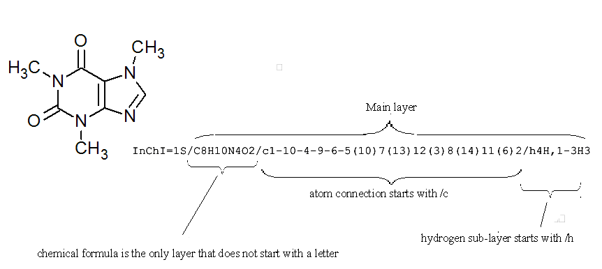
If you would like to view a full list of all the possible layers in an InChI string it is worth consulting Section IIId "The Five InChI 'Layer' Types" of the InChI Technical Manual.
There are 6 InChI layer types, each representing a different class of structural information:
- Main layer
- Charge layer
- Stereochemical layer
- Isotopic layer
- Fixed-H layer
- Reconnected layer
Note: The Fixed-H layer is optional (absent in Standard InChI) and can be selected by using the FixedH option of the InChI Software. The Reconnected layer is also optional (absent in Standard InChI) and can be selected by using the RecMet option.
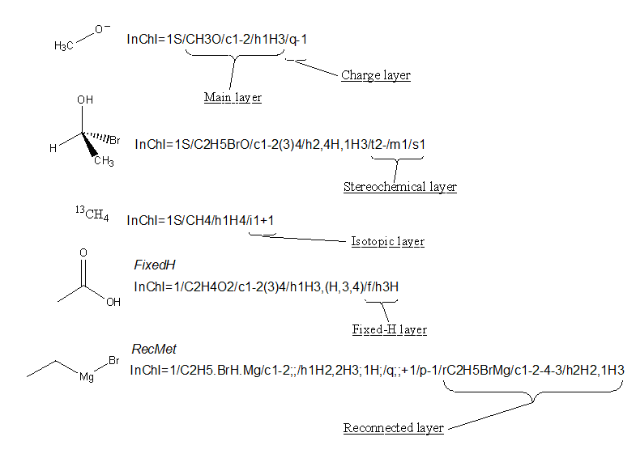
While the InChI is divided up into different layers to describe different types of structural information, each of these layers is also split into sub-layers to allow full description of each part of the structure (note: there is no sub-sub-layering).
For instance, the Main layer can be split up into three sub-layers:
- Chemical formula
- Atom connections
- Hydrogen atoms
You can see that the top of the above five structures has an InChI with all three sub-layers of the Main layer.
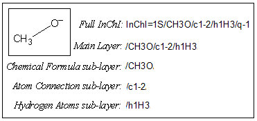
The Main layer is also the only layer that will appear in every possible InChI that can be generated and the only sub-layer of the Main layer that will always appear is Chemical Formula. The only exceptions are InChIs of a proton, deuteron, and triton (H+, 2H+, 3H+), which do not have the Main layer. For example, H+ has InChI=1S/p+1/i/hD.
If you would like to view a full list of all the possible sub-layers in an InChI it is worth consulting Section IIId "The Five InChI 'Layer' Types" of the InChI Technical Manual. Please see also Section 3.8 "Are new versions expected?" of this FAQ for current activities on extending the capabilities of InChI and potentially adding additional layers.
The InChI for the structure below shows the challenge in representing our different views of chemistry. For example, to a bioscientist "glutamic acid" and "glutamate" are the same thing, but to a computational chemist the loss of a proton, or its variable site of attachment is critical. InChI is the only approach that allows us to describe this flexibility.
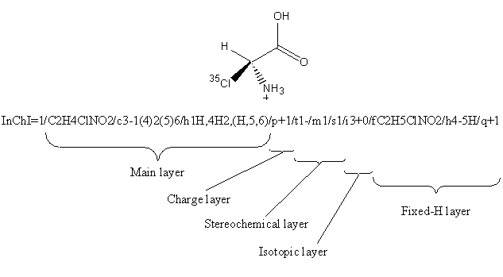
Most often you can probably use a common subset of the layers, the one of Standard InChI, e.g.:
InChI=1S/C2H4ClNO2/c3-1(4)2(5)6/h1H,4H2,(H,5,6)/p+1/t1-/m1/s1
where there is no complication. If various levels of fuzziness in the compound description or searching are required, one needs to become more familiar with the InChI layers and sublayers.
Quite often, chemical compound structures are represented imprecisely, with missing features; stereochemistry being an obvious example.
No, the 'layered' model allows chemists to represent chemical substances at a level of detail of their choosing. Except for the Main layer (atoms and their bonds if any), the presence of a layer is not required and the layer appears only when corresponding input information has been provided.
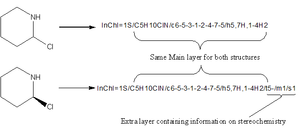
Detailed information contained in a layer depends on preceding layers, so layers may not be manually or programmatically 'excised' and reused. However, bottom layers may be 'pruned', leaving a valid, though less constraining InChI.
For instance, if all layers following the formula are eliminated, the InChI will apply to all substances with that formula.
The Standard InChI is designated by the prefix:
"InChI=1S/…………"
(that is, letter 'S' immediately follows the version number; Standard InChI version numbers are always whole numbers).
With respect to its internal (layered) structure, the Standard InChI is a subset of the IUPAC International Chemical Identifier v.1.
The Standard InChI was defined to reach the following goals.
- Standard InChI is for the purposes of interoperability/compatibility between large databases/web searching and information exchange.
- Standard InChI and non-standard InChI are always distinguishable.
- Standard InChI is a stable identifier; however, periodic updates may be necessary; they are reflected in the identifier version designation, which is included in the InChI string.
- Any shortcomings in Standard InChI may be addressed using non-standard InChI.
The layered structure of the Standard InChI conforms to the following requirements.
- Standard InChI organometallic representation should not include bonds to metal for the time being.
- Standard InChI distinguishes between chemical substances at the level of 'connectivity', 'stereochemistry', and 'isotopic composition', where:
- connectivity means tautomer-invariant valence-bond connectivity (different tautomers have the same connectivity/hydrogen layer);
- stereochemistry means configuration of stereogenic atoms and bonds; undefined and unknown stereo designations treated as the same;
- isotopic composition is based on mass number of isotopic atoms (when specified)
In the light of the above requirements, the following options are selected for generation of Standard InChI:
- include tautomerism (i.e., turn mobile H perception on, exclude "fixed hydrogen" atoms layer);
- omit reconnection of bonds to metal atoms;
- assume that only the narrow end of a wedge points to a stereocenter;
- exclude unknown/undefined stereo if no other stereo is present;
- treat stereochemistry as absolute (not relative or racemic).
For more technical details about Standard/Non-standard InChI generation (and, specifically, for explanation of 'structure perception', 'stereo interpretation' and 'InChI creation' options) see the Section 15 'InChI Software' of this FAQ.
An InChI is created from the input information in three steps:
Normalization - chemical structure drawing artefacts are removed while maintaining a complete description of the compound. Steps involved are:
- Ignore electron density and use simple atom connectivity only.
- Disconnect salts and metal atoms in organometallic compounds.
- Normalise mobile hydrogen atoms, variable protonation and charge.
Canonicalization - a set of atom labels are algorithmically generated; they do not depend on how the structure was initially drawn.
Serialization - the set of labels derived during canonicalization is converted into a string of characters, the InChI.
Note that the InChI API does allow one to perform these steps via separate procedures, see InChI API Reference.
For more details, check with the InChI Technical Manual.
When computing atom numbers (labels) during the canonicalization, bond orders and charge positions are ignored. Electron density and pi-electrons are important for describing much interesting chemistry but they can be ignored here as they are not important for naming purposes.
This does not introduce ambiguity as long as all H atoms and net charges are accounted for. InChI only uses bond orders for perceiving stereochemistry [(Z)- vs (E)- in but-2-ene, for example] and mobile H-atoms. It only stores the net charge, without regard to its position.
Note that the above InChI does not contain any information on the double bond positions or charge positions.
Yes, as InChI is composed of hierarchical layers; new layers could be added to the specification to refine the information represented by current layers. Future versions of InChI, for example, may include polymers, mixtures, additional classes of stereochemistry, electronic states, etc. Consideration is currently being given to further extension to chemical reactions.
If an Identifier is produced, it will be a unique representation of whatever was submitted and is not 'invalid'. While some checking is done, and warnings are issued if the input structure is ambiguous, errors and ambiguities in the input will remain in the output.
If, for example, a molecule with hypervalent C is submitted [e.g. C(CH3)6], a valid InChI will be produced, though with a warning that the carbon valence has been exceeded.
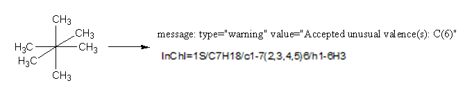
Yes, the version number is an inalienable part of the Identifier.
To better understand what InChI does it is strongly suggested to run the Win32 GUI application wInChI-1.exe against your test structures because it displays:
- input structures as InChI understands them, with all H and charges;
- their initial numberings;
- canonical numberings, equivalence, tautomeric groups;
- stereo parities;
- bond changes (these cannot be observed in any other way but in wInChI or under a debugger).
You should not do so (though you of course can). This may give apparently reasonable answers but it is error-prone and may break relations in the InChI.
InChI currently does not support the representation of:
- Polymers
- Complex organometallics
- Markush structures
- Mixtures
- Conformers
- Excited state and spin isomers
- Non-local stereochemistry/chirality
- Topological isomers
- Cluster molecules
- Polymorphs
- Unspecific isotopic enrichment
- Reactions
Also, InChI is not suitable for very large compounds; technically, InChI input may not contain more than 1023 atoms.
Please note that there are IUPAC InChI subcommittee working groups currently addressing some of these matters. Details of these efforts can be found at: http://iupac.org/web/ins/802
The Main layer of InChI (and the whole of a Standard InChI) must be the same for any arrangement of mobile hydrogen atoms. This is achieved by the logical removal of mobile-H atoms and the tagging of H-donor and H-receptor atoms.
As an example, look again at guanine some of whose tautomeric structures are shown below:
If we create a non-standard InChI for one of those tautomeric forms (with the option FixedH) we get:
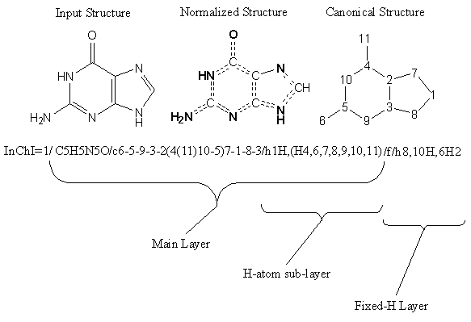
Note: Donors and receptors of H and changeable bonds are highlighted.
If we take a closer look at the hydrogen sub-layer of the Main Layer we see that atom number 1 has one H and 4 atoms H are shared by atoms 6, 7, 8, 9, 10 and 11.
The Fixed-H layer is useful if you wish to represent a particular tautomer of a given structure. To represent different tautomers, one should use a non-standard InChI created with FixedH option. If InChIs for the tautomers were created without FixedH option, then the normalization performed by the InChI generation program would make these InChIs identical:
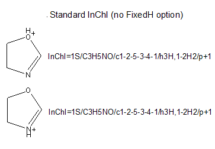
However, if one provides FixedH option, then the extra Fixed-H layer is appended. This layer is essentially an InChI for the whole structure without the normalization of the mobile hydrogen atom locations. This produces an InChI that specifies a single tautomeric form of the structure:
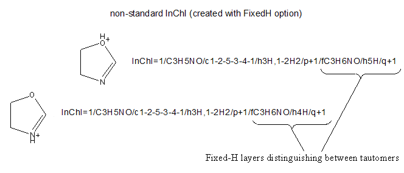
Yes.
For example, oxalamide:

The mobile hydrogen groups are:
(H2,3,5) - showing that there are two hydrogen atoms that are mobile between atoms with canonical numbers 3 and 5.
(H2,4,6) - showing that there are two hydrogen atoms that are mobile between atoms with canonical numbers 4 and 6.
In its current state, InChI recognizes the most common form of H migration (for the full list, see Table 6, Section IVb of the InChI Technical Manual). However, several ways of tautomeric migration that are not supported by default may appear important for some chemists. In particular, these are keto-enol and long-range tautomerisms.
The current InChI Software release provides, as an experiment, an access to extended tautomerism detection related to keto-enol and 1,5-tautomerism. This is achieved through the use of the options KET and 15T, respectively.
Note that these two kinds of advanced tautomerism detection are, actually, an extension to InChI v. 1. Their activation may affect very significant numbers of InChI strings. Also, these features are not yet tested completely. Therefore, the both options are provided only for experimentation purposes and are strongly discouraged for routine usage.
Each separate, covalently bonded entity in a salt is treated independently. The information for each component is separated by ';' in each layer. Note, however, that in keeping with common convention, in the chemical formula sub-layer of the Main layer the components are separated by a dot. InChI uses simple rules to separate these components if they are entered as a single entity.
The basic definition for recognition of a salt is:
M-X or Y-M-X
where M is a metal atom and HX, HY are "acids".
In connected "salts", metals are connected by single bonds only and do not have H-atoms connected to them. Metal valences should be the lowest known to InChI or, for some metals, the valence may also be the 2nd lowest valence. Positively charged metals should have the lowest known to InChI valence (see Appendix 1 "InChI Standard Valences" of the InChI Technical Manual).
Metals are all elements except these:
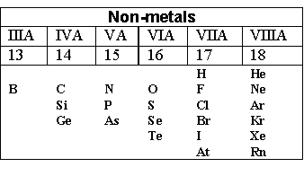
"Acid" is one of the following three:
Upon disconnection atom X or O of the acid receives a single negative charge; the charge of the metal atom is incremented. Substances drawn as H4N-X are disconnected to NH3 and HX.
Several examples are shown in the table below:
Note that inorganic acid anions do not fit the salt definition. For example, sodium nitrate is treated as a coordination compound, so may be reconnected on user request.
No widely accepted means of representing organometallic substances exists. Ferrocene, for instance, may be drawn with the central iron atom connected to each of the two rings, to each of the atoms in the rings, to each of the bonds in the rings or not connected at all.
The default approach taken by InChI is to represent the structure as the individual, interconnected components along with the separated, unconnected metal atoms. For a large majority of organometallic compounds, this provides a unique InChI.
This is the only choice for generating Standard InChI.
If a bonded organometallic structure representation is desired, however, it may be specified by selecting option RecMet of InChI Software, which adds an extra 'Reconnected' layer to the end of the current InChI (which of course becomes a non-standard InChI).
This reconnected layer does depend on drawing conventions.
Note that in the InChI, the layers are sectioned by semicolons, ";", to separate the information for each of the components. To minimize the length of the InChI, as the two cyclopentadienyl rings are identical, both are represented in the same section of each layer (indicated by 2*). In the Reconnected Layer, the structure is treated as one large component.
Note that the "reconnected" structure could contain a full-fledged InChI consisting of all InChI layers (Main Layer, Charge Layer, Isotopic Layer, Fixed H Layer, and Fixed/Isotopic Combination Layer). Examples showing repetitions may easily be constructed by adding components (entities) that have no bonds to metal. These components will be repeated after /r.
From the technical viewpoint, the full InChI normalization and canonicalization algorithm in case of metallated compound and RecMet option is called two times: (a) for the structure after disconnection of the bonds to metal, and (b) for the original structure.
In case of the metal disconnection, the user may request to append the Reconnected layer (which represents the structure as given in the input) to the normalized InChI. This is done by selecting "Include bonds to metal" in the winchi-1.exe and option RecMet in the InChI generation program.
A disconnected salt cannot be reconnected in this way. For instance, if you were to enter sodium ethanoate with a bond between O and Na (as below) into the InChI generation program, this bond would be disconnected with no possibility to reconnect it.
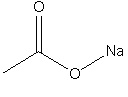
Yes. In fact, it is the case if you calculate an InChI of a compound drawn as two or more coordination compounds (entities) that are not connected to each other by chemical bonds.
For example:
The two types of represented stereochemistry, double bond and tetrahedral, are expressed as separate sub-layers. At present, double bond stereochemistry is extracted from input x,y coordinates (and is not calculated for stereogenic bonds inside rings of 7 or fewer members), while tetrahedral stereochemistry is derived from 'in-out' wedge bond types or x,y,z coordinates. InChI library calls also allow parities instead of coordinates.
Double bond stereochemistry is encoded in the /b sub-layer. Tetrahedral stereochemistry is encoded in the /t sublayer. Relative, absolute and racemic stereoisomers are distinguished.
Stereo descriptors may also be explicitly entered as unknown, which is distinct from cases where an expected stereo descriptor is missing, in which case an 'unspecified' (or undefined) tag is used.
Therefore, depending on the completeness of the stereo description entered, a variety of sets of stereo descriptors are possible for a structure with multiple stereocenters. This is a common source of ambiguity and error in chemical structure representation. An advantage of the layered representation is that all of these variations are contained in a single layer, which does not affect other layers (a rare exception may occur in the order of the components if /o layer is present).
The stereochemistry of allenes is represented in the /t segment and cumulenes - in /b segment of the Stereochemical layer.
InChI considers tetrahedral centers as possibly stereogenic if they meet some formal requirements which reflect a common chemical knowledge. Tetrahedral carbon atom is the most obvious case.
For aliphatic nitrogen, InChI generally does not consider it as a possible stereogenic center due to a likely inversion of the sp3-nitrogen configuration.
However, there are two exceptions. The first case is N in a 3-membered ring (aziridines). The second case is quaternized nitrogen, N(RR'R''R'''R'''')+.
Even in these cases an additional requirements should be met in order for N to qualify for a possibly stereo center (e.g., there should be no H among the substituents). The list of formal requirements which InChI considers while deciding if tetrahedral centers (N or other) are possibly stereogenic is given in Table 8 (Section IVd) of the InChI Technical Manual.
In some situations, InChI logic may be imperfect. Thus for tetrahedral nitrogen, inversion may be blocked by conformational restrictions. One example is aziridines, which InChI "understands". However, inversion may be blocked in other situations, e.g. if N sits in a brigehead position in bi (or poly) cyclic systems. An example is Tröger's base which is optically active. InChI does not recognize this. Such confusions are probably unavoidable in general (unless InChI software is able to estimate inversion barriers) and may only be excluded on a per-class based approach, like that for aziridines.
By default, InChI Software (and Standard InChI) assumes that the stereo configuration of tetrahedral centers indicated in an input structure is an absolute one (this behavior corresponds to Sabs option; the other two correspond to Srel and Srac options). That is, the default interpretation is that the compound is a single enantiomer and its absolute configuration is in the input structure. InChI stores the configuration as parities (+ or - for all of the known stereogenic centers) in the /t layer. There may also be unknown centers with unknown or undefined stereo but at least one must be absolutely known.
The flag /s1 indicating "absolute stereo" is set automatically if the mirror image is different from the input structure. The /m flag will always be present in the case of absolute stereo. Two enantiomeric InChIs have identical /t layers but differ by having /m0 or /m1. The /m1 configuration is a mirror reflection of the /m0 configuration. (not all parities are necessarily inverted by the mirror reflection; for example, parities of the stereogenic atoms involved in a cis or trans arrangement do not change.)
If a mirror image of a structure is identical to the structure then no /s1 or /m will be added (and the warning "Not chiral" will be issued by InChI Software). For example:
Alternatively, one may modify the default behavior of the software (through appropriate program switches; see the Section 15 'InChI Software' of this FAQ) and consider the whole stereo as 'relative' or 'racemic'.
'Relative' assumes that the compound is a single enantiomer but its absolute configuration is not known. There may be additional /t centers which do not have known stereochemistry but at least one must have known stereochemistry. The fact of using this option is signified by the /s2 segment in the resulting InChI. (Note that in this case the /m segment is never present.)
'Racemic' assumes that the compound is a 1:1 mixture of enantiomers. At least one /t center must have known stereochemistry. The fact of using this option is signified by the /s3 segment in the resulting InChI.
The /s refers only to the stereochemistry that changes upon spatial inversion (or a reflection in a plane since the reflection is an inversion and a proper rotation). As the inversion cannot change the double bond stereo, /s modifies the /t (tetrahedral stereo) layer and has nothing to do with the double bond stereo /b layer.
The only significant thing from a practical viewpoint is that the enantiomers of a chiral molecule do have the same '/t' layer but different /m indicators, either /m0 or /m1.
For example, the two enantiomers of bromochlorofluoromethane are represented as the following Standard InChIs:
InChI=1S/CHBrClF/c2-1(3)4/h1H/t1-/m0/s1
InChI=1S/CHBrClF/c2-1(3)4/h1H/t1-/m1/s1
Actually, the first string is generated for the (R)- and the second for the (S)-stereoisomer. However, there is no simple relation between InChI parities +/- and R/S configurations of stereocenters; InChI does not use CIP rules and deduces parities from its own canonical numbers of atoms.
For diastereomers, InChI strings will differ by {/t../m..} sub-strings. Among those diastereomers, stereoisomers in each enantiomeric pair will have the same {/t..} sub-string but different {/m..}. For example, the four stereoisomers of (F)(Cl)C-C(Br)(I) are represented as:
(R,R) InChI=1S/C2H2BrClFI/c3-1(6)2(4)5/h1-2H/t1-,2+/m1/s1
(S,S) InChI=1S/C2H2BrClFI/c3-1(6)2(4)5/h1-2H/t1-,2+/m0/s1
(R,S) InChI=1S/C2H2BrClFI/c3-1(6)2(4)5/h1-2H/t1-,2-/m0/s1
(S,R) InChI=1S/C2H2BrClFI/c3-1(6)2(4)5/h1-2H/t1-,2-/m1/s1
(again, the RS-convention is used just for convenience)
Yes, if you use a Non-standard InChI.
Standard InChI always marks both "unknown" and "undefined" chiral centers (briefly: "undefined" means not assigned while "unknown" means explicitly marked as unknown, e.g., with "wavy" bonds) with the same '?' sign.
In the Non-standard InChI flavour created with the option SLUUD (stands for 'stereo labels for "unknown" and "undefined" are different'), two different signs were used to mark "unknown" and "undefined" stereo: 'u' and '?', respectively.
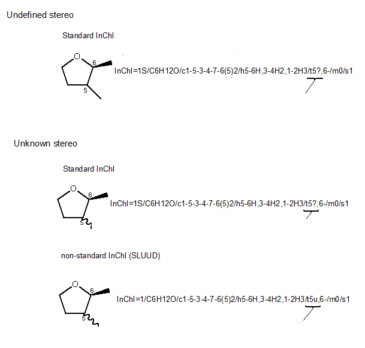
By default, InChI Software does not include in the Identifer an unknown/undefined stereo designation unless at least one defined stereocenter is present in the input structure. In particular, a single unknown/undefined stereocenter will not appear in the InChI string.
This is always true for Standard InChI.
The evident reason is that, in general, the explicit indication of completely unknown stereo would just add irrelevant information to the identifier.
However, one may specifically create Non-standard InChI with unconditionally shown unknown/undefined stereo; see topic 15.22 "What does SUU do?" of this FAQ.
As additional levels are added, stereo descriptors may change, and this may result in a new stereo layer.
An example is shown below. If no isotopes are taken into consideration, as it is in the Stereo Layer, only the chiral center at atom 3 is calculated because H and D are treated as equivalent. However, in the Isotopic Layer, the H and D are treated as different; therefore, the Isotopic Stereo sub-layer is included with stereo information for chiral centers 2 and 3:
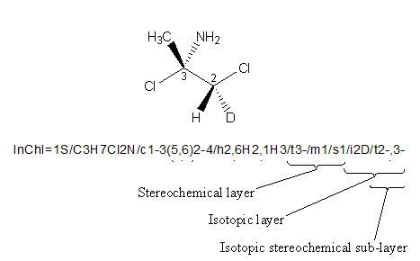
In general, /s may appear in main (M), main-isotopic (MI), fixed-H (F), and fixed-H-isotopic (FI) layers (you may want to take a look at the "Appendix 2. Abbreviations and Layer Precedence" of the InChI Technical Manual)
However, the /s segment (as well as /t, /b, and /m) may be deliberately omitted if it is the same as in the preceding layer. For stereochemical layers the precedence is somewhat complicated because it depends on the existence (that is, non-emptiness) of the layers in M or F.
One more (not quite obvious) reason for omitting a contribution from a non-isotopic component of an isotopic stereo segment /t or /b (located MI or FI) is that this component, unlike isotopic components, *always* has isotopic stereo exactly same as its non-isotopic stereo in the preceding layer. The contribution from such a non-isotopic component to the isotopic layer /m is ".", as if the inversion does not change its /t stereo.
However /s may not be omitted in, for example, MI if some of the components do not have /t in M and have /t in MI even though another component has absolute or relative stereo in both M and MI and as a result both /s segments are same.
InChI represents isotopes as a single layer in the identifier.
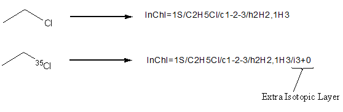
For each isotopically enriched atom in the structure, the InChI layer will hold that atom's canonical number followed by the isotopic shift [i.e. +0 for chlorine-35(35-35) or +1 for carbon-13 (13-12)], followed by isotopic hydrogen (D or T) if present e.g.
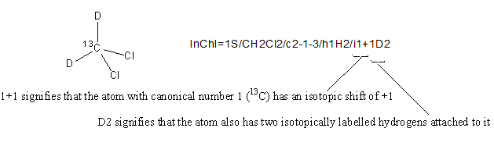
Some complexity arises when there are isotopically labelled hydrogen atoms that can undergo tautomerism. In the Hydrogen sub-layer of the Main layer these hydrogen atoms are treated as non-isotopic; the number of these mobile isotopic hydrogens atoms is appended to the "exchangeable isotopic hydrogen atoms" part of the isotopic layer. The same is done to isotopic hydrogen atoms that may be subject to heterolytic dissociation in aqueous solution (for example D in RS-D).
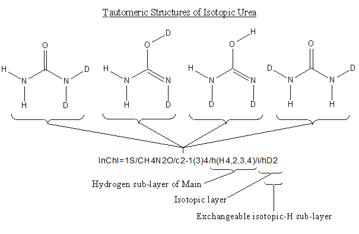
The Hydrogen sub-layer of the Main layer does not take isotopic labelling into account and thus treats the deuterium atoms as hydrogen. The layer states that the four H are shared between atoms with canonical numbers 2, 3 and 4 (the two N and O).
The Exchangeable Isotopic-H sub-layer of the Isotopic Layer contains two deuterium atoms that are shared between heteroatoms in the whole structure.
The isotopic shift indicated in the isotopic layer is an integer giving atomic mass relative to the rounded average atomic mass of the element.
For example, if atom number 6 is 37Cl, it is represented as "6+2" (average atomic mass of Cl is 35.453; rounding to the nearest integer gives 35, 37 ? 35 = +2).
The reference averaged atomic masses used by the InChI algorithm are listed in Appendix 1 "InChI Standard Valences" of the InChI Technical Manual.
The value of isotopic shift "+0" means that the atom is of a specific isotope whose mass number is the same as the rounded average atomic mass.
For example, the string
InChI=1S/H2O/h1H2
corresponds to water containing a natural mixture of isotopes (99.757% of 16O, 0.038% of 17O, and 0.205% of 18O; 99.9885% of 1H and 0.0115% of 2H; the uncertainties being omitted ), while
InChI=1S/H2O/h1H2/i1+0
represents water containing a specific isotope of oxygen, 16O.
A seeming ambiguity arises for elements that have a single stable isotope, namely, Be, F, Na, Al, P, Sc, Co, As, Nb, Rh, I, Cs, Pr, Tb, Ho, Tm, Au, Bi, Pa, or a single known isotope.. For these elements, "+0" seems to be redundant and to create an ambiguity. However, "+0" reflects the intention of the user to distinguish the particular isotope from others, possibly artificial isotopes of the same element.
Yes.
Element name "D" is equivalent to element="H", isotope 2.
Element name "T" is equivalent to element="H", isotope 3.
Any isotopic attributes of "D" or "T" provided in the structure are ignored.
The ordering of isotopes goes according to descending atomic mass. Thus the ordering for Tritium, Deuterium and Protium is T>D>1H.
Note that if you specify the generic H (rather than the specific protium isotope 1H) then it will not appear in the isotopic layer (which only deals with specific isotopic enrichment).
No, there is no support for nuclear isomers (metastable isotopes, like Technetium-99m). The main reason is that the main structure input format (MOL/SDF v2000) does not allow one to express metastable nuclei.
To quote the InChI Technical Manual:
If two InChIs are the same, then it is safe to assume that the compounds (structures) that they represent are the same. However, the layered structured of InChI permits the representation of some compounds at different levels of detail or completeness. If, for example, one InChI is completely contained in another, then the second may be viewed as a more detailed representation of the first [for example, (Z)-but-2-ene may be viewed as a more detailed representation than but-2-ene]. Or, for example, if one set of InChIs was derived from a collection with no stereo information and another contains complete stereo information, comparisons should be made with stereo information removed. Of course, manual confirmation may be necessary using chemical names if stereo distinctions are important.
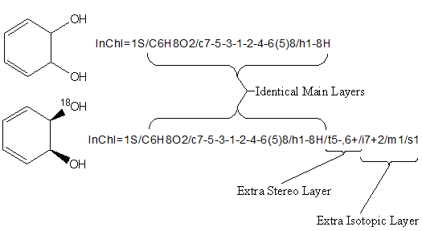
The above image shows two structures, one being a more specific description than the other. Both have identical Main Layers, so the chemical formula, atom connection and hydrogen information for the structures are identical. Additional stereochemical and isotopic information in the lower structure results into two extra layers in its InChI.
To quote the InChI Technical Manual:
Values computed for each layer depend on prior layers. As a consequence, for example, two stereochemical layers for different compounds cannot be directly compared ? comparisons must involve the complete set of preceding layers. On the other hand, layers do not depend on successive layers.
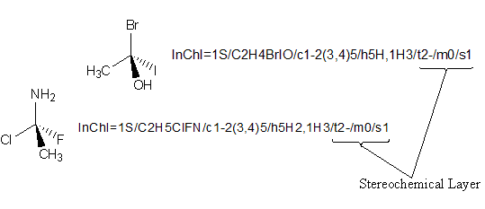
The above image highlights why you cannot directly compare layers such as the stereochemical layer without taking earlier layers into account. The two compounds are clearly different (and thus have different Main layers), yet both have the same stereochemical layer. This is because the stereochemical layer only holds the canonical number for a stereocenter and its stereochemistry, with all the information from the earlier layers used in calculating the stereochemistry being absent. Therefore, directly comparing the stereochemical layers of the two compounds would be analogous to stating "these two compounds are identical, as each has a stereocenter at atom no. 2 with stereochemistry of '-' ".
If the compounds have been properly represented, then they should be identical regardless of the original method of representation. See Appendix 4 of the Technical Manual.
It is not possible starting from the same structure and the same degree of certainty of all facets to generate different InChIs.
Formally you cannot assert that they are the same in all respects, although the differences may only represent different levels of knowledge. If they differ only in certain layer(s), or in the absence of layer(s) then they represent "the same compound" with different levels of knowledge.
It is not possible to use InChI syntax to compare molecules with different but similar connection tables.
It may be possible to compare different tautomers.
It may be possible to show that compounds differ in chirality.
If two compounds are declared enantiomers they will have the SAME /t string and differ in the /m layer (/m0 or /m1)
If two compounds have components on common (e.g. ions in salts, or ligands disconnected from metals) it will be possible to identify identical fields. For example A+B- and C2+2B- will have fields which in principle can be syntactically separated.
The overall length of InChIKey is fixed at 27 characters, including separators (dashes):
AAAAAAAAAAAAAA-BBBBBBBBFV-P
All symbols of InChIKey except the separators (which are dashes, that is, 'minus' characters) are uppercase English letters.
Partially mirroring InChI's layout, InChIKey has several distinct parts:
-
AAAAAAAAAAAAAA is the first hash block.
It is a 14-character hash encoding the basic (Mobile-H) InChI layer, that is, molecular skeleton (connectivity).
- BBBBBBBB is the second hash block.
It is an 8-character hash of the remaining layers (except for the "/p" segment, which accounts for added or removed protons and is not hashed at all; instead, the number of protons is indicated at the end of the InChIKey). In all cases, this block encodes stereochemistry and isotopic substitution information, associated with molecular connectivity expressed by the first block. In case of Non-standard InChI, it also encodes information on the exact position of tautomeric hydrogens (if any), as well as on the related stereo/isotopic data.
- F is a flag which indicates the kind of InChIKey.
It is 'S' for Standard InChIKey (produced out of Standard InChI) and 'N' for Non-standard.
- V is an InChI version character.
It is 'A' for version 1 ( 'B' is reserved for version 2, etc. ).
- P is a [de]protonation indicator.
As an example, below is presented a Standard InChIKey for caffeine.
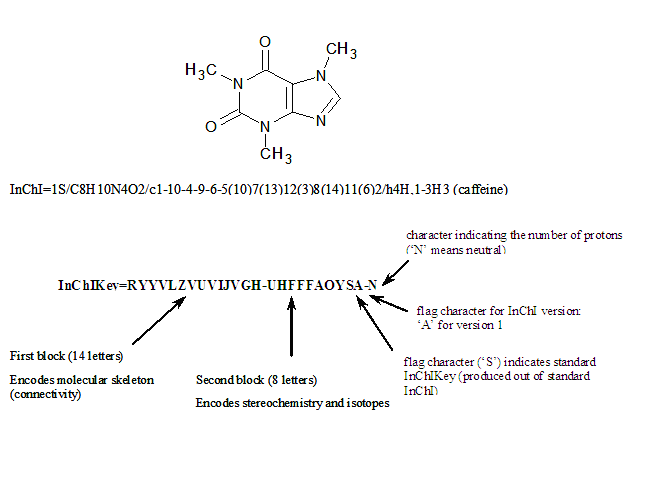
This is a descendant of the /p layer of InChI. The /p layer is not hashed when producing InChIKey; instead, the number of protons is indicated as a separate 1-character block at the end preceded with a hyphen. Here N means neutral, M means -1 proton, O means +1 proton, etc. :
| Char |
Protons |
Char |
Protons |
| N |
0 |
|
|
| M |
-1 |
O |
+1 |
| L |
-2 |
P |
+2 |
| K |
-3 |
Q |
+3 |
| J |
-4 |
R |
+4 |
| I |
-5 |
S |
+5 |
| H |
-6 |
T |
+6 |
| G |
-7 |
U |
+7 |
| F |
-8 |
V |
+8 |
| E |
-9 |
W |
+9 |
| D |
-10 |
X |
+10 |
| C |
-11 |
Y |
+11 |
| B |
-12 |
Z |
+12 |
| A |
<-12 or >+12 |
|
|
The different protonation states of the same compound will have InChIKeys differing only by the protonation indicator (unless both states have a number of inserted/removed protons greater than 12; in this case the protonation flag will also be the same, 'A').
This is exemplified below by standard InChIKeys as well as standard InChI strings for neutral, zwitterionic, anionic and cationic states of glycine (note that neutral and zwitterionic states do not differ in the total number of protons so they have the same standard InChI/InChIKey):
A hash code is a fixed length condensed digital representation of a variable length character string. Providing a signature derived from an InChI string is helpful for search applications, including Web searching and chemical structure database indexing; also, it may serve as a checksum for verifying InChI, for example, after transmission over a network.
Hash is a well-known general concept in computer science. Hash functions (that is, the procedures for computing a hash) are widely used in various applications, for example, to produce the digital signatures in cryptography.
The hash of an InChI string is a (binary) number. It is expressed, in InChIKey, by uppercase English letters (so-called base-26 encoding).
No. By definition, hashing is a one-way conversion procedure.
To find the InChI that generated an InChIKey, you need a cross-reference or lookup table. The situation is similar to that with the Internet DNS lookup which resolves host name to the IP address.
On the Web, you typically search for the particular InChIKey using the common search engines (Google/Bing, etc.) or use the dedicated chemistry search/database engines like ChemSpider. Naturally, for stand-alone databases a lookup service may be added by developers/maintainers.
Yes, though quite seldom.
Due to its very essence, a hash function does not provide a unique identifier in the true sense. In very large collections, e.g. virtual libraries, collisions (that is, the same InChIKey value for different structures) are unavoidable.
Some recent estimates of chemical space size for small molecules are in excess of 1060, and for proteins it is 10390 [Nature, 2004, 432(7019), Insight, pp. 823-865, http://www.nature.com/nature/insights/7019.html and refs. therein]. T. Fink et al. in "Virtual Exploration of the Small-Molecule Chemical Universe below 160 Daltons", [Angew. Chem. Int. Ed. 2005, 44(10), pp. 1504-1508] quote an estimate of 1018-10200. This is far beyond the capabilities of even much longer hashes than InChIKey uses.
Also, there is no doubt that collections of virtual, computer-generated molecules may have virtually unlimited size thus breaking collision resistance of a hash of any reasonable length.
In general, a key may not fully replace an InChI string but is a convenient synonym and index to it. The practical goal of InChIKey design was to provide an InChI-based signature, which is sufficiently strong (collision-free) for existing molecular collections of about 107 entries (e.g., PubChem Compound ~ 3×107 as of Fall 2011) plus something in reserve.
A theoretical ? optimistic ? estimate of the collision resistance (corresponds to 50% chance for a single collision) of the InChIKey 1st block is 6.1×109. That is, for a dataset of 6.1 billion molecular skeletons, an expected number of collisions is 1/2. An analogous estimate for the 2nd block of InChIKey is 3.7×105.
In other words, the estimate of the whole InChIKey's collision resistance is equal to 6.1×109 molecular skeletons x 3.7×105 stereo/protonation/isotopic substitution isomers per skeleton ≈ 2.2×1015 total structures.
Alternatively speaking, for a collection of 1 billion different InChIKey entries, the estimated probability of an accidental collision of the first layers for a newly added structure is 2.7×10-9 % and for both layers is 2.0×10-20 %.
Note that those are ideal, i.e. upper, estimates, which may not be valid in practice because of as yet unknown properties of the SHA-2 hash function.
Before the launch of InChIKey in 2007, the collision resistance was tested on several databases of InChI strings created out of real and generated structures (the sizes of the datasets as of mid-2007):
- ZINC
~4×106 entries, real structures, http://zinc.docking.org/
- PubChem
~10×106, real, http://pubchem.ncbi.nlm.nih.gov/
- GDB
~26×106, generated; courtesy of Prof. J.-L. Reymond, University of Berne, http://dcbwww.unibe.ch/groups/reymond/, private communication
- FP42
~42×106, custom-generated
- Overall
~77×106, all of the above merged, duplicates excluded; real+generated
No InChIKey duplication (hash collision) was observed in any of these databases.
It seems that that at the time of writing (early 2012) no hash collisions have been reported for real databases of real (that is, not computer generated) molecules.
Yes.
- In 2009, there was a report of collisions of the InChIKey 2nd block which were observed for stereo isomers of Spongistatin I by Dr. Jonathan Goodman:
http://www.google.com/search?hl=en&source=hp&q=ICXJVZHDZFXYQC
Note, however, that collisions are absolutely expected for a molecule of such a complexity, having 24 tetrahedral stereocenters and 2 stereogenic double bonds. This complexity is far beyond the capacity of InChIKey 2nd block.
Interestingly, a closer examination of Spongistatin I stereo isomers and corresponding InChIKeys demonstrated that the number of collisions N observed in computational experiment does correspond to theoretical estimates perfectly. For example, the theoretically expected N for 1,000,000 second blocks of InChIKey representing stereoisomers of Spongistatin I is 3.64. The N actually obtained for such a size of dataset is 3.56 (averaged by 32 randomly generated datasets).
- In September 2011, there appeared a report on a collision for the 1st block of InChIKey (by Dr. Anthony Williams quoting Dr. Jonathan Goodman, http://www.chemconnector.com/2011/09/01/an-inchikey-collision-is-discovered-and-not-based-on-stereochemistry/). Supposedly, the collision has been found in a computer-generated dataset. However, as of the time of this writing, no details are available except for those by link above, so no final conclusions may be drawn.
This is just a representation issue. In fact, the same hash may be represented by letters, digits, letters and digits and even with bare 0s and 1s (as it is actually represented internally, in computer memory).
However, representation issues may appear critical for applications like publishing or Web search. In particular, search engines may tend to break the text "on the border" between letters and non-letters, trying to detect "words" since the words of human languages do not contain digits or punctuation marks.
Though the exact behavior may vary from one Web search engine to another and from context to context (and even change with time for the same Web search engine), it is more robust to have nothing but letters in the InChIKey. Using only letters increases chances that a search engine would consider InChIKey as a single "word" (or phrase) and would index it as such.
Also, the robust approach includes use of only upper-case letters as most if not all search engines may not differentiate between upper- and lower-case letters. For example, [at the moment] Google reports the same number of 40,600,000 results for quoted strings "hash", "HASH" and "hAsh".
So we are trading a longer hash representation (the less symbols are in the "alphabet", the longer is the hash) in exchange for more robust Web searching.
The hash function used for producing an InChIKey is the cryptographic SHA-2 256-bit hash function.
Computing the InChIKey is readily affordable in terms of CPU time. Hashing the entire InChI set generated from PubChem required less than 5 min on a machine with Pentium Dual Core 2.8 GHz CPU.
Using cryptographic (i.e., producing ? hopefully ? a strongly randomized output) hash function increases the chances that collision resistance will be as close to the theoretical limit as possible. Note that the truncation of the hash is directly allowed by the SHA-2 description (http://csrc.nist.gov/publications/fips/fips180-2/fips180-2withchangenotice.pdf).
For those who are not satisfied with the capacity/collision resistance of the normal InChIKey, the InChI Software is able to output the rest of the 256-bit SHA-2 signature for 1st and 2nd blocks.
This is done with the command-line options "/XHash1" and "/XHash2" ("-XHash1" and "-XHash2"under Linux).
Combining InChIKey with the 'extra hash signature tails' drastically increases the collision resistance. Note that these tails of signatures appear in the program's output as hexadecimal numbers, to avoid confusion with InChIKey itself (which is always formed from capital Latin letters only).
Example:
InChI=1S/C4H8/c1-3-4-2/h3-4H,1-2H3/b4-3+
InChIKey=IAQRGUVFOMOMEM-ONEGZZNKSA-N
XHash1=82ff0307735072b4ec27b9c093e9486dca09e8df1d0812c9
XHash2=403ee94266e1d8d96d47b99c4b17ff5f92e3a74e3f0f5ab8bc2775bb
This represents an empty structure that, for example, may appear in a database when a structure of a substance is missed, for whatever reason.
Both InChI and InChIKey for empty structure are valid identifiers.
Note however that, in contrast with InChI, the InChIKey for empty structure is not empty itself (and the empty InChIKey is not valid).
To generate an empty structure the inchi-1 executable may be fed with a MOL file that has zero atoms and zero bonds with the command line switch "WarnOnEmptyStructure" supplied.
The Standard InChI and InChIKey for empty entity are:
InChI=1S//
InChIKey=MOSFIJXAXDLOML-UHFFFAOYSA-N
The Non-standard InChI and InChIKey are:
InChI=1//
InChIKey=MOSFIJXAXDLOML-UHFFFAOYNA-N
The Standard InChI and InChIKey for a proton (H+) are:
InChI=1S/p+1
The version with 'fixed H' is:
InChI=1/p+1/fH/q+1
To be exact, the strings above refer to a common chemical meaning of "proton", that is, monocationic hydrogen atom. If the proton as a particle is actually meant, it should be more precisely described as a positively ionized atom of a specific hydrogen isotope, protium, 1H+:
InChI=1S/p+1/i/hH
or a fixedH-version
InChI=1/p+1/i/hH/fH/q+1/i1+0
This may be represented in InChI as a doubly ionized atom of a chemical element - helium - present in the Periodic Table. Again, to be precise one should denote the specific isotope:
InChI=1S/He/q+2/i1+0
Currently these two cannot be represented in InChI because these are not [ionized] atoms of a chemical element present in the Periodic Table.
The Standard InChI and InChIKey for H-H are
InChI=1S/H2/h1H
InChIKey=UFHFLCQGNIYNRP-UHFFFAOYSA-N
The answer depends on the structure drawing (more precisely, on the connection table) ? linear or triangular connected, or disconnected.
- linear connected H-H-H(+) or H-H(+)-H
InChI=1S/H3/h1H2/q+1
InChIKey=QWLPJNYQVKBMAN-UHFFFAOYSA-N
- triangular connected (each hydrogen is bound to two others)
InChI=1S/H3/c1-2-3-1/q+1
InChIKey=RQZCXKHVAUFVMF-UHFFFAOYSA-N
- disconnected H2 + H(+)
InChI=1S/H2/h1H/p+1
InChIKey=UFHFLCQGNIYNRP-UHFFFAOYSA-O
InChI=1S/Li
InChIKey=WHXSMMKQMYFTQS-UHFFFAOYSA-N
InChI=1S/Li.H
InChIKey=SIAPCJWMELPYOE-UHFFFAOYSA-N
By default, InChI Software assumes that the input structure may contain implicit hydrogen atoms. Therefore, it adds hydrogen atoms to eligible atoms to satisfy standard valences of elements. For lithium, the standard valence is 1. This converts Li to LiH, which results in InChI/Key for lithium hydride.
To prevent this behavior, one should use 'DoNotAddH' switch of InChI Software or, in the input molfile, set the explicit valence of Li to zero.
They are wise enough to supply 'DoNotAddH' switch (or use other ways to indicate absence of explicit hydrogen atoms) while calling the InChI Library procedure.
The InChI string for Ag is:
InChI=1S/Ag
so no hydrogen addition is performed.
The reason is that the rules of adding hydrogen atoms depend on the element's nature and atomic charge.
For the complete reference, consult Appendix 1 'InChI Standard Valences' of the InChI Technical Manual. As is seen from the table there, Li is considered eligible for hydrogen addition while Ag is not.
The identifier for lithium hydride
InChI=1S/Li.H
describes the two independent components: since lithium is a metal, the InChI Software breaks its connection to H (makes the metal compound disconnected).
For the list of elements which InChI consider as metals, consult Appendix 1 'InChI Standard Valences' of the InChI Technical Manual.
Because InChI for mononuclear hydrides does not contain the /c layer. This applies to the 'reconnected-metal' part as well. Therefore, the identifier for lithium hydride produced with RecMet option is:
InChI=1/Li.H/rHLi/h1H
It may seem unclear why "/s" does not follow "/m" in the stereoisotopic layer of the shown structure (structure 28 from the Samples.sdf file of the InChI distribution):
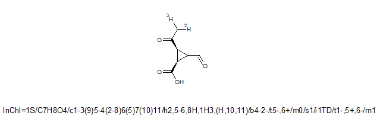
The reason is that the stereochemistry [sub-]layer is "repetitive" (you may want to take a look at the "Appendix 2. Abbreviations and Layer Precedence", section "Layer Precedence" in the InChI Technical Manual). In general, if an InChI's "repetitive" segment /e ('e' stands for any appropriate symbol, e.g., 's') in a given layer is exactly same as its namesake segment '/e' in the preceding layer, then /e is omitted.
Note that the /m layer is included in both stereochemical layers as its content is different in main-stereo and isotopic-stereo sub-layers (m0 and m1).
The InChI Software is a counterpart of InChI which provides all the necessary means to generate InChIs using stand-alone executables as well as API (Application Programming Interface) library calls.
The updates (new versions) of this software are periodically released by the InChI Trust with the approval of IUPAC.
Current InChI Software v. 1.04 (the major version of the software is always the version number of the identifier, e.g., 1 for now) includes:
inchi-1 - a 'command line' InChI generator.
Available in 32 and 64-bit versions for MS Windows and Linux.
libinchi - InChI API library.
Available in 32 and 64-bit versions for MS Windows (dll) and Linux (so library).
winchi-1.exe - a graphical Windows application.
A 32-bit version which will also run under 64-bit Windows.
Note that the inchi-1 executable has a normative role i.e. it acts as the final arbiter: by definition, the reference InChI for any molecule is InChI generated with inchi-1.
A distribution package of InChI Software also includes source codes for all programs, examples of calling the InChI library, sample MOL/SDF input files, etc.
The source code of inchi-1 is the ultimate place documenting the InChI algorithm in maximum detail.
Usage of InChI Software is documented in the User Guide (InChI_UserGuide.pdf; intended for end users) and API Reference (InChI_API_Reference.pdf; intended for developers, who use the InChI library).
To better understand what the InChI algorithm does it is strongly recommended that you run the MS Windows GUI application winchi-1.exe against your test structures because it displays:
- Input structures as InChI understands them, with all atoms H and charges.
- The initial numbering of the atoms.
- Canonical numberings, non-stereo equivalence and tautomeric groups.
- Stereo parities.
- Bond type changes made during the normalization (these cannot be observed in any other way than in winchi-1 or under a debugger).
It is possible to run winchi-1 from within a virtual Windows environment under Linux.
The example programs, inchi_main (written in C) and make_inchi.py (written in Python) are provided solely to exemplify, by source codes, how to use the InChI API.
They should not be used as a production InChI generator and may create InChI strings which are different from those obtained with reference application inchi-1 (or winchi-1.exe). The major reason is the somewhat simplified algorithm of parsing MOL/SDF input files used in the example programs.
InChI Software allows one to produce both Standard and Nonstandard InChIs, as well as their hashed representations, InChIKeys.
By default, the InChI executable/library generates Standard InChI and InChKey. In particular, Standard identifiers are generated when the software is used without any options ('options' are command-line switches for an executable; they are mirrored by the input parameters used for the InChI API library calls).
If some options are specified and at least one of them is related to non-standard InChI (see below for 'InChI creation' options), the non-standard identifiers are produced.
To use the software, first extract (preserving the folder structure) the contents of the zip files of distribution package to a directory of your choice. There are four archive files (INCHI-1-API.ZIP, INCHI-1-BIN.ZIP, INCHI-1-DOC.ZIP, INCHI-1-TEST.ZIP); each is unpacked into a separate subdirectory with the name corresponding to the archive name.
InChI executables and library are located in INCHI-1-BIN subdirectory (in lower-level subdirectories for different platforms, Windows/Linux and 32/64 bit).
The executables are ready to use (e.g., no special installation/accessing registry is necessary under Windows). Installing dynamic libraries may require appropriate placement and setting up necessary access paths; please consult your system manual.
For additional details, you may check with software release notes and user guide (files RelNotes.pfd and InChI_UserGuide.pdf, resp.), which are available in the distribution package).
The InChI Software distribution package contains a User Guide (InChI_UserGuide.pdf) that takes you through the creation of InChIs using the sample structure files and the generation program provided.
Yes, the InChI library (libinchi) serves exactly this purpose.
Please check InChI API Reference (file InChI_API_Reference.pdf of distribution package).
You may also look at the source code of examples of using the InChI library which are supplied in the distribution package (for C and Python calling programs).
The InChI Software executable accepts Mol files (*.mol), concatenated Mol files (*.sdf), or the program's own output produced with the "Full auxiliary information" (e.g. the output produced when you click on the 'Write Result' button in winchi-1).
The executable inchi-1 requires usage of input files of the above types. The GUI application winchi-1 under MS Windows allows one to simply cut-and-paste the input structure drawing from certain chemical structure editors (e.g. Accelrys Draw, ACD/ChemSketch, ChemDraw, etc.) into the winchi-1 main window, as an additional means of input.
Currently, no.
Yes. If you do not know the connection table (i.e. you do not have access to the *.mol or *.sdf file representation of a chemical structure) then you can simply draw the structure in one of the 2D chemical drawing packages described above and then 'copy-and-paste' that structure into the main window of the Windows application winchi-1.exe.
Once this has been done, the InChI is created automatically for you and presented in the lower section of the application window.
As a general solution, you may use OpenBabel, a powerful tool for molecular file format conversion:
http://openbabel.org
Note that OpenBabel even provides an ability to generate InChI with its own software (via under-the-hood use of the InChI Software library).
However be careful: format conversion/interpretation may not be 100%-bullet-proof.
Nothing, if you are generating a Standard InChI which uses the most common default options designed for inter-operability.
If you choose to generate non-standard InChI, you need to select additional options. The most important options are summarized below.
If the species has potentially mobile hydrogen atoms, the user needs to specify whether to represent the substance assuming H-mobility as associated with tautomerization (default) or as a substance with all H-atoms fixed (option FixedH).
Also, if the structure is organometallic, the user needs to specify whether the fully bonded structure will be appended to the disconnected metal atoms structure (RecMet options). Except for compounds composed entirely of covalent bonds, this representation is generally not preferable (as the InChI will contain a layer that may depend on drawing conventions).
Also, when appropriate, a stereodescription may be entered as a single enantiomer, a racemic mixture, or, with two or more stereocenters, as a relative stereochemical description.
If there are no mobile hydrogen atoms, no exact mobile hydrogen positions and no Fixed-H layer may appear. So this specification will have no effect -- except that the resulting InChI will be qualified as Non-standard. (Note that if FixedH is the only 'InChI creation' option actually used, this InChI will differ from Standard InChI only in the absence of letter 'S' in the prefix).
The switches used in the InChI Software are broadly divided onto the two classes:
- those that affect the running, display, input, output, etc. but not the InChI.
- those that affect the InChI.
The switches affecting the InChI comprise those specific to
- structure perception
- stereo interpretation
- InChI creation
Note that all switches that modify the InChI act by appending layers, not by altering the core InChI.
The perception options are considered drawing style/edit flags which affect the input structure interpretation. It is assumed that the user may deliberately use these options to take into account specific features of structure collections. As the result, the perception options may be used for generating Standard InChI without the loss of its "standardness".
The full list of perception options is as follows:
These are several options which modify the interpretation of input stereochemical data. In principle, they would be considered related to structure perception. However, as the Standard InChI, by definition, requires the use of absolute stereo (or no stereo at all), these 'stereo interpretation' options assume generation of Non-standard InChI.
The stereo interpretation options are:
The 'InChI creation' options affect what the InChI algorithm does, not just the structure perception. They modify the defaults specified for Standard InChI and significantly affect the result (e.g., additional InChI layers may appear). Using any of the creation options
makes the resulting identifier Non-standard.
By default, InChI Software assumes that the input structure may contain "implied" hydrogen atoms and adds hydrogen atoms to eligible atoms to satisfy standard valences.
Sometimes, this may produce undesirable results (see Section 14 'InChI by Examples' of this FAQ on Li/LiH InChIs).
Option DoNotAddH instructs the software to skip the addition of hydrogen atoms.
Note that DoNotAddH is a "perception option"; therefore, it may be used in the generation of Standard InChI without the loss of its "standardness".
This option means that input stereo information (whatever it is and by whatever means it is represented) is completely ignored. That is, InChI generated with SNon option intentionally lacks stereo layer(s).
Note that SNon is a "perception option"; therefore, it may be used in the generation of Standard InChI without the loss of its "standardness".
By default, when InChI Software analyzes the effect of a wedged bond on the stereo configuration of a tetrahedral stereogenic atom it assumes that the stereo configuration is affected by only those wedged bonds which have the narrow end pointing to the stereogenic atom in question. To use the alternative definition, where a wedged bond affects stereo configurations of both atoms it connects, one may use the option NEWPSOFF ("Narrow End of Wedge Points to Stereo is OFF").
Note that NEWPSOFF is a "perception option"; therefore, it may be used in the generation of Standard InChI without the loss of its "standardness".
By default, InChI Software assumes that the overall stereoconfiguration of tetrahedral centers indicated in an input structure is an absolute one (for details, see also the topic "How does InChI express overall stereoconfiguration (absolute, relative, or racemic)?" of this FAQ).
As always, Standard InChI uses the default convention.
To modify the default behavior one may use the options SRel or SRac.
SRel assumes that the compound is a single enantiomer but its absolute configuration is not known.
SRac assumes that the compound is a 1:1 mixture of enantiomers.
One more stereo interpretation option SUCF only applies to MDL MOL files in which the CHIRAL flag is set. By default this is set to 0/off. The combinations are:
SUCF on, CHIRAL 1 => absolute stereo (default for InChI Software)
SUCF on, CHIRAL 0 => relative stereo
SUCF off, CHIRAL ignored. This defaults to absolute stereo by InChI Software.
Note that many drawing programs do not allow the user to specify the chiral flag so the information is very variable. It is more likely that the maintainer of a collection will know whether some or all of the compounds are of known chirality.
Note that any of the above options makes a non-standard InChI. Even if the compound is not chiral and, as the result, InChI does not have /m and /s segments, any of these options makes the InChI non-standard.
By default, InChI Software does not include in the Identifer an unknown/undefined stereocenter unless at least one defined stereo feature is present in the input structure.
The SUU ("always Show Unknown or Undefined stereo") option is intended to alter this behavior. Using SUU results in inclusion of unknown/undefined stereo in all cases.
Note that SUU is an 'InChI creation' option; therefore, it makes a non-standard InChI even if there are no unknown or undefined stereo elements in the structure.
This appends the (metal) Reconnected layer (/r) to the InChI. See topic "How does InChI represent organometallic compounds?" in this FAQ for an example.
Note that RecMet is 'InChI creation' option; therefore, it makes a non-standard InChI.
This appends an additional fixed hydrogen layer (/f). See topics "How does InChI represent compounds with mobile H-atoms (tautomerism, for example)?" and "Why is there a Fixed-H layer if tautomeric groups are shown in the Main layer?" of this FAQ for examples.
Note that FixedH is 'InChI creation' option; therefore, it makes a non-standard InChI.
The option SaveOpt allows one to append a non-standard InChI string with saved InChI creation options.
The "SaveOpt appendage" currently consists of two capital English letters which are separated from the InChI string by a backslash, '\'. Note that this appendage is not considered an integral part (layer) of InChI itself; rather, it is an optional complement. It may or may not be present after the end of the InChI string (by default the "SaveOpt" option is turned off). To signify this, the appendage is separated from InChI by a character, which may not be inside InChI, a backslash. Note also that the InChI generation option "/SaveOpt" (and the saved-options appendage) is not available for the Standard InChI because it is always created with the same standard options.
The encoding of saved options: the first SaveOpt letter encodes whether RecMet/FixedH/SUU/SLUUD options were activated. Each of them is a binary value ON/OFF (1/0), so that there are 2*2*2*2=16 combinations, which are encoded by 16 capital letters 'A' through 'P'. The second letter encodes experimental (InChI 1 extension) options KET and 15T. Each of these options is a binary value ON/OFF (1/0), so that there are 2*2=4 combinations, encoded by 4 capital letters, 'A' through 'D'.
Note that anything but 'A' here would indicate "extended" InChI 1.
Note that here is some reservation for future needs: the 2nd character may accommodate two more ON/OFF binary options (using base-26 encoding).
For the exact encoding scheme, please take a look at the Section 'Saving InChI creation options' of the InChI User Guide.
Some examples follow:
InChI=1/C9H11NO2.Na/c1-3-5(7(3)9(10)12)6-4(2)8(6)11;/h5-6,11H,1-2H3,(H2,10,12);/q;+1/p-1/t5?,6?;
/i/hD/fC9H10NO2.Na/h11h,10H2;/q-1;m/i10D;\OA
(this identifier was created with options /RecMet /FixedH /SUU and /SaveOpt)
InChI=1/C9H11NO2.Na/c1-3-5(7(3)9(10)12)6-4(2)8(6)11;/h5-6,11H,1-2H3,(H2,10,12);/q;+1/p-1/t5?,6?;
/i/hD\KA
(this identifier was created for the same input structure with options /RecMet /SUU and /SaveOpt)
InChI=1S/C9H11NO2.Na/c1-3-5(7(3)9(10)12)6-4(2)8(6)11;/h5-6,11H,1-2H3,(H2,10,12);/q;+1/p-1/i/hD
(this identifier was created for the same input structure with no InChI creation options)
As many software vendors and open-source teams have built the InChI functionality into their own programs (typically through InChI API library calls), cases appear of producing different InChI strings for the same compound when using different software.
This may be related to application of different algorithms for input data pre-treatment, especially the interpretation of source drawing/file format or pre-normalization of structures before calling InChI procedures. (A quite illustrative example related to the perception of poorly drawn stereo may be found at http://sourceforge.net/mailarchive/message.php?msg_id=28013563).
The ultimate reference is, in any case, the InChI string produced by the executable inchi-1 (either under MS Windows or Linux) of the current InChI Software released by IUPAC/InChI Trust.
If your chemistry software of choice does provide some unexpected/undesirable InChI strings, please check if this behavior can be reproduced by the inchi-1 executable.
Conventional methods of representing molecular structure often produce some fuzziness; as a result, you may need to make assumptions about the defaults used by the creator. Examples are:
- Are all hydrogen atoms explicit?
If you know they are, then you should run InChI with the DoNotAddH option. This is by far the most powerful way of ensuring that your InChI is likely to be correct.
- Are all charges included in the files?
Sometimes the creation mechanism omits charges on atoms. This can make it very difficult to calculate the correct molecular constitution and the total electron count.
- Are all stereo centers marked?
Many historical data files have no stereochemistry. Many others have partial stereochemistry (e.g. "everyone knows what the stereochemistry of androstane steroids is so we needn't put it in.")
- Is the stereochemistry absolute or relative?
Even if the all the stereocenters are given, the absolute stereochemistry may be unknown or the sample may be racemic.
Yes, there are. Some of them follow.
- InChI input may not contain more than 1023 atoms.
- Not more than 20 bonds per atom are allowed.
- Allowed bond types are single, double, and triple. As an exception, "aromatic bonds" are also allowed only to be immediately converted into alternating single/double bonds by the InChI Software. Since this conversion is not bulletproof at all (partially because a formal definition of aromatic bonds accepted by everybody does not exist) the use of aromatic bonds is strongly discouraged.
No. The only descriptors related to tetrahedral stereochemistry which InChI Software recognizes are wedge bonds, "Up", "Down", and "Either".
Yes.
In principle, it would try to recognize tetrahedral stereo expressed through wedge bonds. However, no way exists
to recognize stereochemistry of double bonds in the absence of atomic coordinates, using MOL format.
Therefore, all the stereochemistry is deliberately ignored, as a matter of decision. (Otherwise one would get different
InChI stereo layers for 3D and 0D structures of the same compound.) However, the InChI API library accepts input atom and bond parities, which may be derived by the calling software from, for example, SMILES.
Having explicit hydrogen atoms in the input is desirable.
Anyway, InChI Software assumes that the input structure may contain implicit hydrogen atoms and ? if they are detected ? will add hydrogen atoms to eligible atoms to satisfy an element's standard valences.
However, be warned that this may not be a 100%-reliable procedure, especially for organometallics.
The worst are likely to be that:
- the hydrogen count is seriously wrong.
- the total electron count is wrong and the bond orders are incorrect.
- stereocentres are flagged as known when they are not.
Not really for hydrogen atoms. Though InChI Software may add hydrogen atoms, this can go wrong in difficult cases so a safer way would be that you do "hydrogenation before InChIfication" (subjected to quality control) and then generate InChI with the DoNotAddH switch.
The InChI Software will flag unknown stereocentres. It may then be possible to search this InChI against other InChIs where the stereocentres are known and perhaps to add the missing information by hand.
- Yes - if you have the program output produced with "Full auxiliary information" option, AuxInfo.
The AuxInfo string is a valid input for InChI Software which should be enough for regenerating the parent structure. In particular, it holds atomic coordinates which are not contained in InChI itself.
- Yes, with rather significant limitations - if you have just an InChI.
First, as the InChI contains no atomic coordinates, the best result will be only the coordinate-less "0D" structure. Among other things, this means problems with restoring stereochemistry.
Second, if the InChI has been created with some layers omitted, the corresponding structural details may not be restored, evidently. For example, as Standard InChI lacks reconnected metal and fixed-hydrogen layers, neither bonds to metals nor precise positions of mobile H atoms may be regenerated from a Standard InChI.
The InChI API library has a dedicated function GetStructFromINCHI() intended for restoring the structure from InChI (but not from InChIKey, as it is a hashed form of InChI which could not be directly decrypted). Software vendors have already complemented the InChI library with their own procedures for generating atomic coordinates and built the functionality 'Generate structure from InChI string' into their products. Examples (there are probably more) are Accelrys Draw, Perkin-Elmer (formerly CambridgeSoft) ChemDraw, and ACD/Labs ChemSketch.